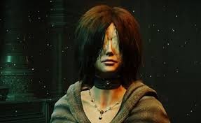
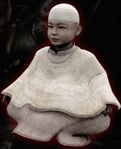
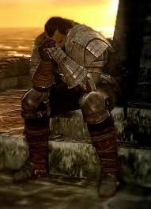
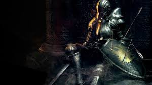

Demon's Souls
Demon's Souls é um aclamado jogo de RPG de ação conhecido por sua alta dificuldade, ambientação sombria e por ser o título pioneiro do gênero "Soulslike". O jogo está disponível em duas versões: o clássico original para PlayStation 3 e um remake visualmente deslumbrante para PlayStation 5.
O jogo é notoriamente desafiador, exigindo paciência e aprendizado com os erros. A recompensa por superar obstáculos difíceis é uma das principais atrações para os jogadores.
Diferente de jogos de mundo aberto, Demon's Souls é dividido em cinco mundos distintos acessíveis a partir de uma área central chamada Nexus. Isso permite aos jogadores tentar áreas diferentes se encontrarem dificuldades em uma seção específica.
O jogo apresenta uma mecânica complexa chamada "Tendência", que pode ser Branca (facilita o jogo, mas oferece menos itens) ou Preta (torna o jogo mais difícil, mas com melhores recompensas) com base nas ações do jogador e nas mortes no modo humano. Isso afeta eventos e áreas exclusivas.
Personagens:
Os personagens de Demon's Souls (2009/2020) são fundamentais para a narrativa e progressão no reino de Boletaria. Eles se dividem entre aliados no Nexo, NPCs encontrados nos mundos e chefes demoníacos.
O Nexo serve como o refúgio central onde residem os aliados mais importantes:
Donzela de Preto (Maiden in Black):
A Donzela de Preto (Maiden in Black) é uma NPC crucial em Demon's Souls, responsável por permitir que o jogador suba de nível no Nexus, utilizando o poder das Almas coletadas; ela é uma entidade misteriosa, com olhos vendados, que serve ao Antigo e é fundamental para o desfecho do jogo, podendo ser sacrificada ou se tornar a chave para o final bom ao adormecer o Antigo.
O Monumental:
O Monumental é o último sobrevivente de uma linhagem de seres "meio-vivos" que agem como guardiões da realidade e do Nexus. Antigamente, existiam muitos Monumentais, mas agora resta apenas um. Você pode encontrar os corpos dos outros espalhados pelo andar superior do Nexus. Ele tem o aspecto de uma criança pequena e imóvel, sentada no chão com uma vela acesa à frente, o que pode enganar jogadores que esperam por uma figura gigantesca.
Stockpile Thomas:
Stockpile Thomas em Almas do Demónio é um trágico NPC no Nexus que armazena o excesso de itens do jogador, permitindo a gestão de inventário, e oferece sabedoria sobre seu abandono de sua família durante o flagelo em troca da ajuda do jogador em expiar sua fraqueza percebida. Ele é uma parte fundamental da atmosfera do jogo, uma fonte de conforto para os jogadores e uma figura trágica cuja história se aprofunda à medida que você encontra itens como o ornamento de cabelo de Jade de sua filha, eventualmente revelando seu fracasso em proteger sua família
Ferreiro Boldwin:
Ferreiro Boldwin (Blacksmith Boldwin) é o primeiro ferreiro encontrado em Demon's Souls, localizado no Nexus, próximo a Stockpile Thomas e cuida dos reparos e venda de itens básicos no início do jogo, sendo irmão do mais avançado Ferreiro Ed e marcando a transição para as forjas mais complexas em Stonefang Tunnel, fornecendo os primeiros serviços de aprimoramento e venda de equipamentos iniciais.

Guerreiro Desanimado (Crestfallen Warrior):
O Guerreiro Desanimado (Crestfallen Warrior) é um NPC depressivo e cínico em Demon's Souls, encontrado no Nexus, que representa o desespero e o medo de se tornar um "hollow", oferecendo informações e conselhos iniciais sobre o mundo, mas se tornando hostil e eventual mente desaparecendo após a morte do Cavaleiro da Torre, tornando-se um ponto crucial para entender o tema do jogo, como um reflexo dos próprios jogadores desanimados, segundo alguns fãs.
O Matador de Demônios (Slayer of Demons)
O Matador de Demônios ou Slayer of Demons, é o protagonista controlável de Demon's Souls, um viajante que chega ao reino amaldiçoado de Boletaria atraído pelo poder das almas, sendo revivido pela Donzela de Preto para destruir os Arqui-Demônios e salvar o mundo, ganhando o título de Matador de Demônios ao derrotar o poder corrompido.
Tutorial:
Para zerar Demon's Souls (PS5 ou PS3) em 2026, você deve derrotar os chefes principais de cada um dos cinco mundos e, em seguida, enfrentar o desafio final no Nexo.
Passo a Passo Principal:
1-Complete o Tutorial e o Palácio de Boletaria (1-1): Derrote o Falange para desbloquear a capacidade de subir de nível com a Dama de Preto no Nexo.
2-Obtenha as 5 Almas de Demônios Maiores: Você deve progredir até o fim de cada uma das cinco "Arquipedras":
- Palácio de Boletaria: Derrote o Rei Allant (1-4).
- Túnel de Stonefang: Derrote o Deus do Dragão (2-3).
- Torre de Latria: Derrote o Velho Monge (3-3).
- Santuário das Tempestades: Derrote o Rei das Tempestades (4-3).
- Vale do Degredo: Derrote a Dama Astraea (5-3).
3-O Desfecho: Após derrotar todos os chefes, o selo no centro do Nexo se abrirá. Fale com a Dama de Preto para descer ao local onde habita O Antigo.
4-Chefe Final: Derrote o Rei Allant (forma verdadeira) dentro do Antigo.
Dicas Essenciais:
1-Build de Magia: Para iniciantes, a classe Realeza continua sendo a mais fácil para zerar, pois permite atacar de longe e recuperar mana.
2-Tendência do Mundo: Evite jogar na "Forma Humana" se não quiser que o jogo fique mais difícil. Se morrer como humano, a tendência do mundo escurece, os inimigos ficam mais fortes e surgem fantasmas pretos. Use o Demon's Souls Wiki para entender as mecânicas de World Tendency.
3-Equipamento: Procure obter o Braseiro Crescente +1 (Crescent Falchion) logo no início do Mundo 4-1; ela é uma das melhores armas para o começo e meio do jogo.
Vídeo: